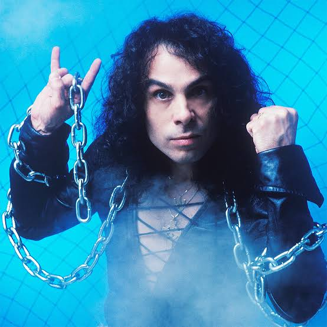

Biografía
Dio fue fundada por Ronnie James Dio en 1982 tras su salida de Black Sabbath. Con una mezcla épica y melódica de heavy metal, temas como “Holy Diver” lo convirtieron en una figura icónica del género.
Información detallada
- Fundadores: Ronnie James Dio, Vivian Campbell, Jimmy Bain, Claude Schnell, Vinny Appice
- Origen: Los Ángeles, California (1982)
- Género: Heavy metal
- Álbumes destacados: Holy Diver, The Last in Line, Sacred Heart, Dream Evil
